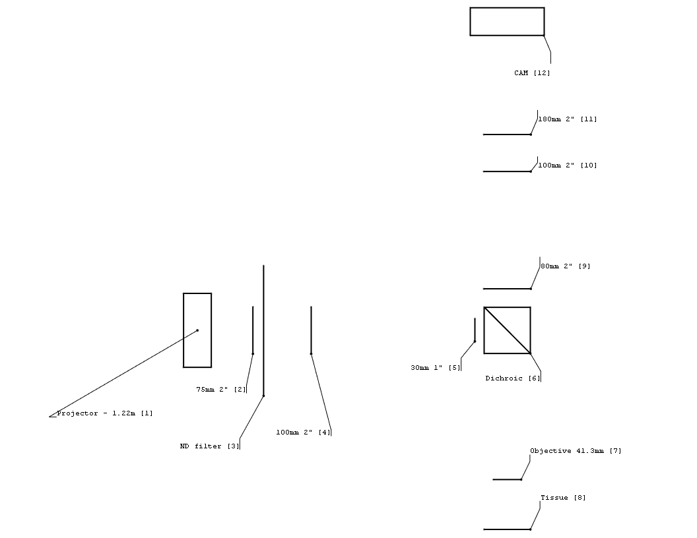
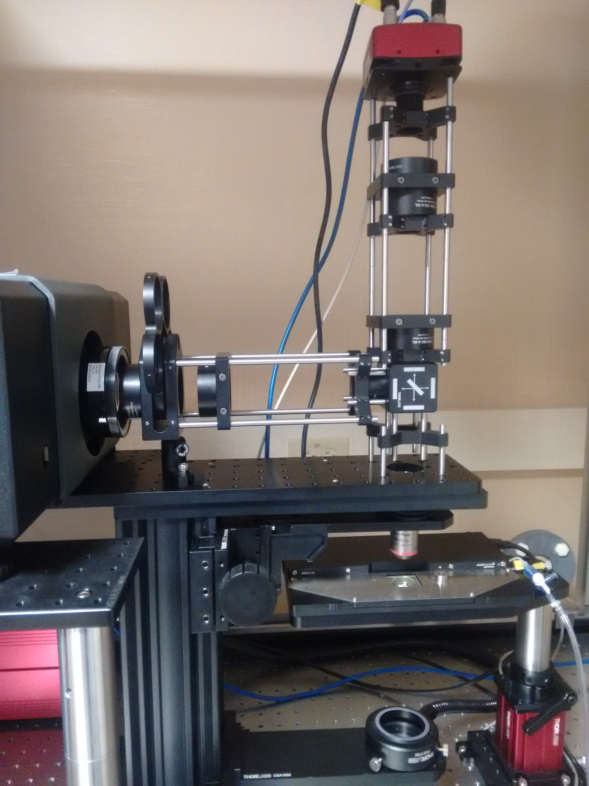

Microscope optics¶
This guide shows the current specification for all the lensing in the microscope.
It lists all the lenses used in the microscope as well as the exact positioning for each of the lenses to achieve the desired projection and camera magnification.
For each lens choice it estimated the best value using screenshots generated by running the Optics App with test values.
Specs¶
Here’s a list of all the lenses used in the microscope. All distances are from the center of the dichroic cube.
Projector. PROPixx projector. Focal distance is 1.22 meters. @32cm.
L1. AC508-075-A-ML. f=75mm – 2”. @27.5cm.
ND filter.
L2. AC508-100-A-ML. f=100mm – 2”. @21.2cm.
L3. AC254-030-A-ML. f=30mm – 1”. @3.5cm.
Dichroic.
L4. Nikon Plan Fluor. F=41.3mm. 4x/0.13, WD17.2. @16.15cm.
Tissue. Tissue platform. @21.55cm.
L5. AC508-080-A-ML. f=80mm – 2”. @4.5cm.
L6. AC508-100-A-ML. f=100mm – 2”. @17.2cm.
L7. AC508-180-A-ML. f=180mm – 2”. @21.2cm.
Acquisition. 4070C-USB Thor cam. Sensor plate @30.427cm.


Optics analysis
Projector to tissue light path¶
For the projector to tissue path, the axis goes from the projector towards the tissue through the dichroic mirror. The center of the dichroic is the zero point, and the projector is on the negative part of the axis and the tissue is on the positive side.
Static Optical Analysis¶
Following is the optical details of all the optical components in the path.
L1¶
L1 must sit close to the projector to get the full projector view. The “object” input to the lens is projected by the projector. The “object” is between 1.22m to 10m on the right of the projector, depending on the focal setting of the projector’s lens. Although it’s the right of L1, we use the provided “object” position. We assume it’s set at 1.22m.
{kind=link}
Figure 1 The characteristics of L1.
The figure is read as follows, we input the focal length of the lens, the position of the lens and the object (as output by the projector). The output is the estimated image position (on the other side of the lens, if positive relative to the lens), the magnification, and the relative distance between the lens and the image.
L2¶
L2 is the zoom lens, that we use to change the magnification of the final pattern projected on the tissue, without changing the position of the projected image.
{kind=link}
Figure 2 The characteristics of L2.
L3¶
L3 is a smaller lens that sits on the dichroic. By being directly attached to the dichroic, it physically acts as an aperture, preventing any stray light from casting echoes on the tissue. If the lens is not directly attached to the dichroic cube cage, there is a circle of interfering reflections around the tissue.
{kind=link}
Figure 3 The characteristics of L3.
L4¶
L4 is the final objective lens before the tissue. The position of the lens is dictated by the positions of all the previous lenses and the projector, as well as the position of the tissue. It is adjusted to get a clear projection on the tissue. The final magnification should be approximately 0.4% of the original object projected by the projector. The distance between the center of the objective and the tissue should be about 5.57cm.
{kind=link}
Figure 4 The characteristics of L4.
Dynamic Optical Analysis¶
In the following, we explore how the lens values were chosen and how the lens values change the primary variables – the final position of the projected pattern and its magnification. In all of this, we were looking for an ideal magnification around 0.4% and the minimal image displacement as a function of lens position for the zoom lens (L2).
Projector¶
{kind=link}
This figure shows how the mag and position would change as we move the projector left 20cm, or upto 5cm to the right. The largest effect is on the mag, which varies between 0.38% - 0.5%. Moving to the left increases mag.
L1¶
{kind=link}
This figure shows how the position and mag would change as we change the focal length and position of L1. We chose 7.5mm@-27.5cm.
From the right graph, while keeping all the other lenses constant we can only increase or decrease the focal length (x-axis), by about +/- 20mm if we want to maintain the current mag. However, we’d also need to move the lens by a lot (+/- 7.5cm) to maintain the mag. On the other hand, from the right graph, the image position will not change much.
{kind=link}
Using a 75mm lens, this figure shows how the mag and positon change as the lens is moved +/- 7.5 cm. It does change the mag between 0.36% and 0.5% and the image position by about 1mm. However, it’s not practical because the projector would also need to be moved as the lens is right next to the projector. In addition, this does not take into account the effect of moving the projector, as that will also affect the variables.
L2¶
{kind=link}
This lens is used as the primary zoom lens. We used a 100mm and zoom by changing its position. From the right image, the lens is moved up until the bottom of the curve and down to change the mag. If the lens is much larger than 100mm, then its range of mag of less (we only cross 5 or 6 contours). If it’s much less than 100mm, the mag changes too quickly. Additionally, from the right graph, getting much less than 100mm, will result and much larger final image position change, which is undesirable. 100mm, seems a good tradeoff, although smaller lenses can be used to further reduce the mag if needed.
{kind=link}
Using a 100mm lens, we look at how changing its position changes the mag and final image position. If we limit ourselves to the -25cm - -13cm range, we transverse the mag range of 0.3% - 0.7%, without changing the final image position much.
{kind=link}
For completeness, the figure above shows the variables when using a 75mm lens.
{kind=link}
As well as when using a 15mm lens. 10mm seems pretty optimal.
L3¶
{kind=link}
We used a 30mm lens, that is attached to the dichroic cub. From the right figure we must stick to lenses less than 40mm because larger lenses will take us out of the required mag range. But, within the 10mm-40mm range, changing the focal length changes mag quickly. But changing the position has little effect.
On the other hand, the image position does change a lot when the lens position of focal length is changed.
{kind=link}
This figure shows how the mag and image position changes when the focal length is changed (very quickly).
{kind=link}
This figure similarly shows how the position and mag changes using a 30mm lens and changing its position.
Placing it right next to the cage, as required anyway to reduce reflections seems optimal.
{kind=link}
Tissue to camera light path¶
For the tissue to camera path, the axis goes from the tissue towards the camera through the dichroic mirror. The center of the dichroic is the zero point, and the tissue is on the negative part of the axis and the camera is on the positive side.
Static Optical Analysis¶
Following is the optical details of all the optical components in the path.
L4¶
The position of L4 (objective lens) and the tissue location are predetermined by the projector light path and tissue location.
Although in the last analysis we estimated that the image/tissue will be at -21.7161cm, we measured it to be around -21.55, likely due to imprecision of all the measurements. But we’ll use -21.55 as the object location for this light path.
{kind=link}
L5¶
L5 is the first lens after the dichroic and sits as close to the dichroic cube cage as possible.

{kind=link}
{kind=link}
Dynamic Optical Analysis¶
In the following, we explore how the lens values were chosen and how the lens values change the primary variables – the final position of the image and therefore camera position and its magnification. In all of this, we were looking for an ideal magnification around 3.3x and the minimal image displacement as a function of lens position for the zoom lens (L6). Another limitation is that the distance between the final lens (L7) and the image cannot be much less than 5cm or 6cm because the lens and camera thickness prevent that.
As a note, this light path has more server restrictions and degeneracies than the projector to tissue light path. We have no control over the position of the objective (L4) because that’s predetermined by the projector to tissue light path. Similarly, the minimum final lens to camera distance reduces the options significantly.
L4¶
{kind=link}
This figure shows that as we change the object (tissue) position, if we change the objective position by the same amount in the same direction, both the mag and the final image position will remain generally unchanged. This is good, because as we saw earlier in the projector to tissue light path, if the objective is moved down, the projector will project the tissue image by about the same amount further. Therefore, if both the objective and the tissue are moved by the same amount, neither the projector nor the camera positions and lensing would need to be adjusted (perhaps by tiny amounts).
L5¶
{kind=link}
For L5, to have a good mag, we should prefer lower focal lengths. But too low will have too much mag. We picked 80mm. For image distance, focal length doesn’t have a significant impact.
{kind=link}
This figure shows how the lens position affects the mag and final image position when using a 80mm lens. As can be seen, increasing the lens position reduces the final image distance, which is a problem if it gets below the minimum final lens – camera distance. However, the mag increases. We placed it at 4.5cm, which the closest to the dichroic cube we could place it so that the final image will be as far from the final lens as possible.
L6¶
{kind=link}
The goal for this lens is to act as a zoom lens. Ideally, as we move it up and down the final image mag will change through our desired range, without changing the final image position by much. Looking at the left figure, we see that a 100mm lens is the most optimum because when it is moved up and down it will change final image position minimally. Similarly, from the right figure, when moved up and down it’ll go through a range of mag values quickly.
{kind=link}
This figure shows how the image position and mag will change when a 100mm lens is moved up and down. We can see how the image position changes minimally, when the lens is moved through a range of mag values.
We can also ask how the mag and position will change as the lens is moved up and down as a function of the focal length of L5 (the previous lens).
{kind=link}
Using 100mm for L6, this figure shows that as we change the focal length for L5, the image position doesn’t change much. But, by reducing the focal length, we can increase the baseline mag. So e.g. if we picked a 75mm lens rather than 80mm for L5, we would get a higher magnification.
Following we replicate the L6 figures using a 75mm lens for L5, rather than 80mm above.
{kind=link}

We can see that using 75mm, the image position change as a function of lens position is even flatter than with a 80mm lens and that the overall mag also increased. So choosing a 75mm vs 80mm for L5 can be changed depending on the desired mag, if we need to change it by a small amount.
{kind=link}
We can also ask how the mag and image position would change if we move L5 up away from the dichroic cage by a little. The right figure shows that increasing L5’s position will not change the mag range for L6 by much. It mostly serves to accentuate the change in the image position (left figure) as L5 is increased. But that can be traded against a mag increase if that’s desired.
L7¶
{kind=link}
For the final lens before the camera, we need to ensure that the image is not too close to the lens because otherwise the camera cannot get close enough to see it. This minimum distance is about 5cm. Therefore, for the right graph, instead of showing the image position as the intensity value, we shoe the distance between the lens and the image and threshold at 5cm.
We observe that increasing the focal length will increase the final image position. On the other hand, increasing the final lens position will only decrease the image position. For the mag, increasing either the focal length or the lens position increases the mag. Therefore, this lens provides us some freedom to choose the baseline mag for the zoom lens.
{kind=link}
This figure shows the above observation more clearly, that for the selected lens position, increasing the focal length will increase the image position and mag.

In the same vane it’s interesting to ask what the effect of increasing the focal length of the final lens (L7) will have on the mag range as L6 is moved up and down. Similarly, how much is the final image position perturbed? The above figure shows that as we increase the focal length of L8, the baseline mag will increase. But, from the left figure it seems that as the focal length increases, the image position changes more. The following figure shows it clearly.
{kind=link}
This figure shows how the mag range and image position changes as L6 is moved up and down when L7 is 250mm, rather than 180mm above. We can see clearly that the baseline mag is larger on the right, but so is the image position deflection on the left. This suggests that 180mm is a overall good choice, except if higher mag is required.
{kind=link}
So far, we haven’t found a great way to increase the baseline mag by a lot. We saw earlier that as we increase the position of L7, the baseline mag increases, but the lens to image distance also decreases, which may be a problem. The above figure looks at the mag and image location range as the zoom lens is moved up and down for different L7 positions. Indeed, we can see that as L7 position increases, the overall mag increases.
{kind=link}
This figure shows the lens to image distance and mag values when we move L7 up to 27cm, rather than 21.2cm that we used earlier. We can see that indeed the overall mag increased, but so does the image position and that the image position is more variable.